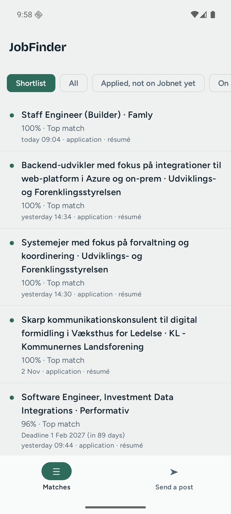
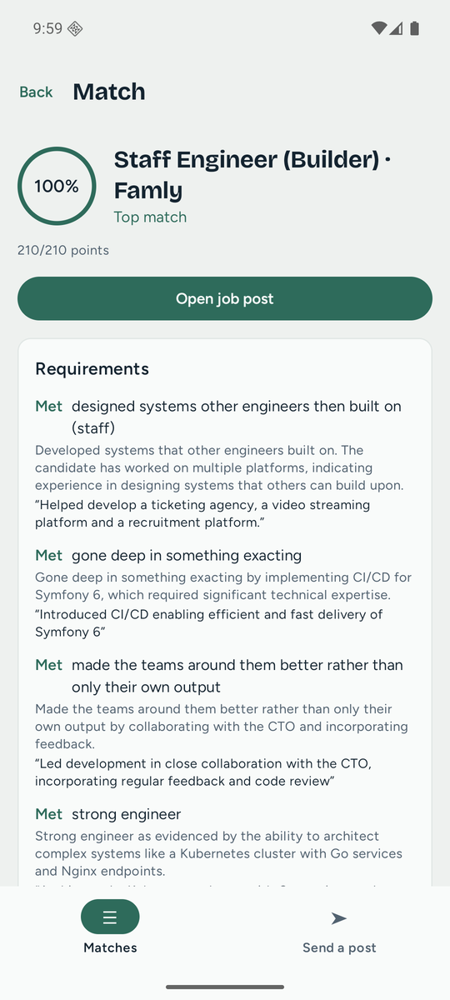

See today's matches on the bus, or send a post you just spotted to your PC to be checked. The phone talks straight to your PC over Tailscale, a free private network for your own devices.
There's no JobFinder server. Your CV and matches never leave your PC, and the phone only asks the PC for them. Tailscale introduces the two devices but can't read what they say to each other.
Not just on your home Wi-Fi: wherever the phone has a connection, it can reach your PC, as long as the PC is on.
The code works one time, for five minutes. After that the phone has its own key. Lose the phone, press Remove, and the key stops working right away.
Only your own devices can reach your PC, and only a paired phone gets an answer.